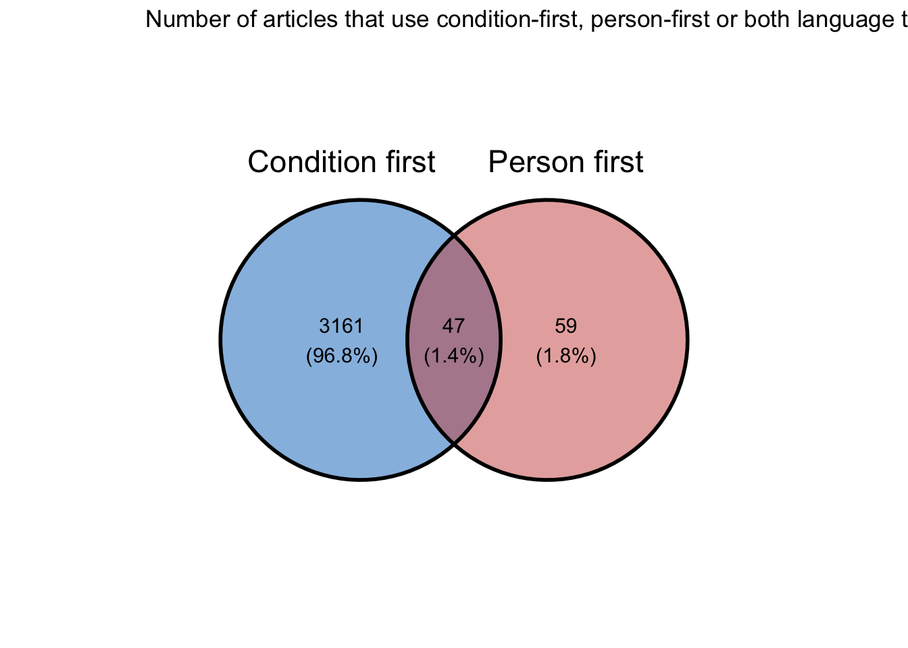
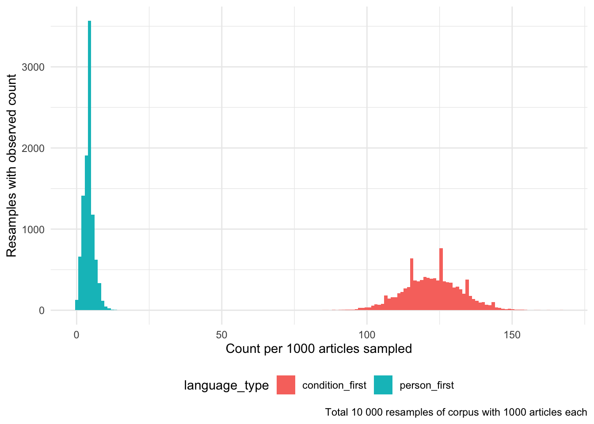
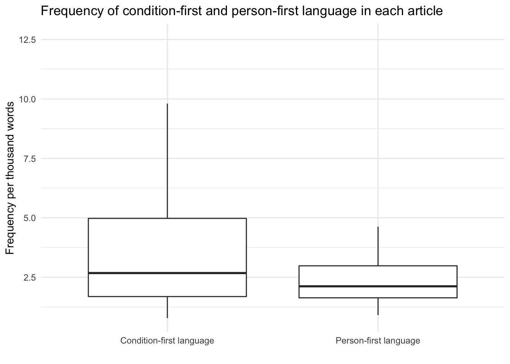
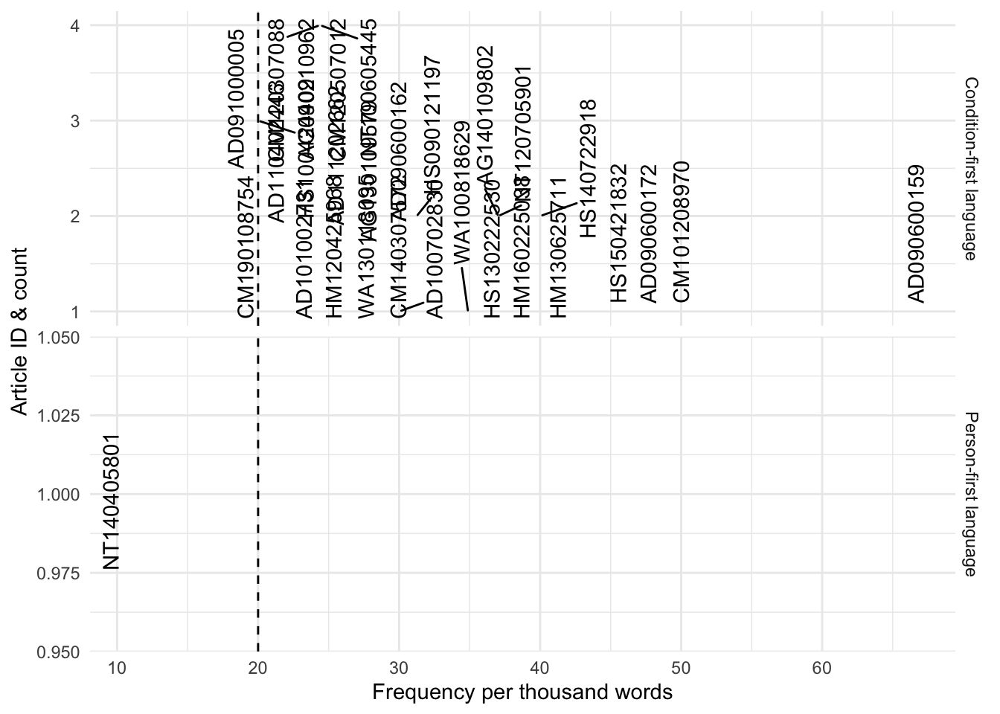
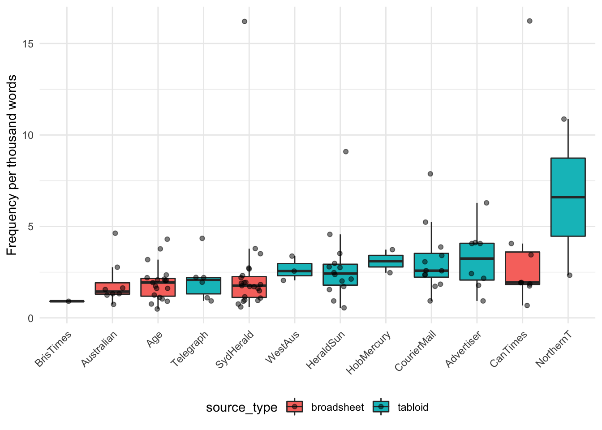
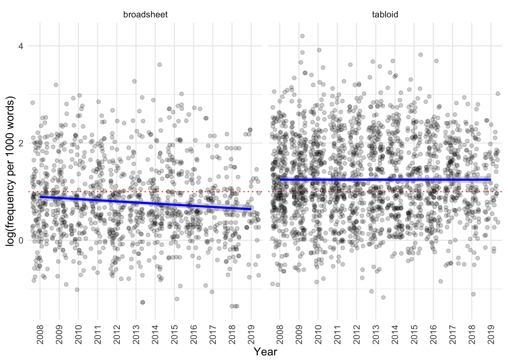
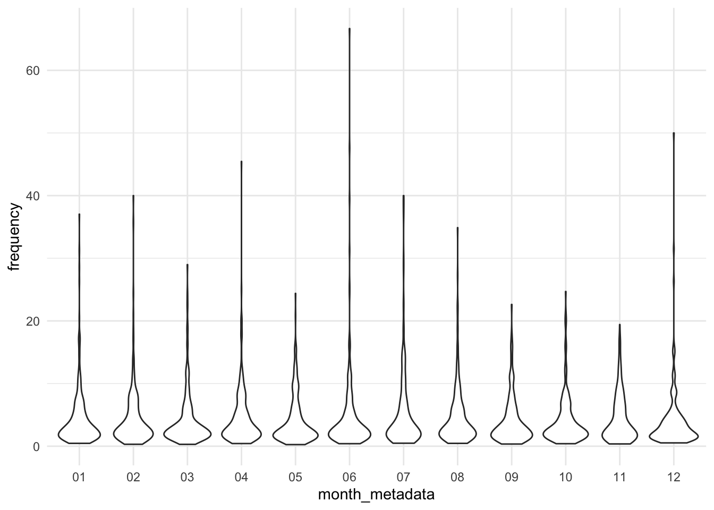

In this notebook, we explore whether there is a difference in the use of condition- vs person-first language in the Australian obesity corpus.
Code
library(here)library(dplyr)library(ggplot2)library(ggvenn)library(readr)library(tidyr)library(knitr)library(ggrepel)library(report)library(lme4)library(optimx)# set ggplot2 to use the minimal theme for all figures in the document# unless explicitly specified otherwisetheme_set(theme_minimal())read_cqpweb<-function(filename){read.csv(here("100_data_raw", filename),
skip =3, sep ="\t")%>%janitor::clean_names()}condition_first<-read_cqpweb("aoc_all_condition_first.txt")person_first<-read_cqpweb("aoc_all_person_first.txt")metadata<-read_csv(here("100_data_raw", "corpus_cqpweb_metadata.csv"))additional_source_metadata<-read_csv(here("100_data_raw", "addition_source_metadata.csv"))metadata_full<-inner_join(metadata, additional_source_metadata)condition_first_annotated<-inner_join(metadata_full, condition_first, by =c("article_id"="text"))%>%mutate(frequency =10^3*no_hits_in_text/wordcount_total)person_first_annotated<-inner_join(metadata_full, person_first, by =c("article_id"="text"))%>%mutate(frequency =10^3*no_hits_in_text/wordcount_total)corpus_articlecounts<-read_csv(here("100_data_raw", "articlecounts_full.csv"), col_names =TRUE, skip =1)%>%filter(year!="source")%>%rename(source =year)
As discussed in the EDA (TODO link here), we use the metadata-provided word counts to count the frequency of occurrences per thousand words.
Total number of articles with each of the language usages
How many articles (absolute numbers and relative to the total number of articles in each source) use condition-first vs person-first language?
This table shows how the number and percentage (out of 100%) of articles in which person-first and condition-first language is used in the corpus, by publication:
Code
condition_person_rbound<-person_first_annotated%>%select(article_id, year, source)%>%mutate(type ="Person-first")%>%rbind({condition_first_annotated%>%select(article_id, year, source)%>%mutate(type ="Condition-first")})# generate how many articles per source are in the corpuscorpus_total_articles_bysource<-corpus_articlecounts%>%rowwise()%>%mutate(total =sum(c_across(where(is.numeric))))%>%select(source, total)condition_person_rbound%>%select(-year)%>%group_by(type)%>%count(source)%>%inner_join(corpus_total_articles_bysource)%>%mutate(percent =round(100*n/total, 2))%>%rename(count =n)%>%pivot_wider(id_cols =source, names_from =type, values_from =c(count, total, percent), names_glue ="{type} {.value}")%>%rename(Total_articles =`Person-first total`)%>%select(-`Condition-first total`)%>%kable()
source
Condition-first count
Person-first count
Total_articles
Condition-first percent
Person-first percent
Advertiser
456
8
3349
13.62
0.24
Age
315
19
2826
11.15
0.67
Australian
191
8
1960
9.74
0.41
BrisTimes
22
1
228
9.65
0.44
CanTimes
212
8
2044
10.37
0.39
CourierMail
434
12
3131
13.86
0.38
HeraldSun
509
14
3722
13.68
0.38
HobMercury
172
2
1465
11.74
0.14
NorthernT
95
2
822
11.56
0.24
SydHerald
430
23
3636
11.83
0.63
Telegraph
144
6
1089
13.22
0.55
WestAus
228
3
1891
12.06
0.16
This table shows how the number and percentage (out of 100%) of articles in which person-first and condition-first language is used in the corpus, by year:
Code
# generate how many articles per year are in the corpuscorpus_total_articles_byyear<-corpus_articlecounts%>%pivot_longer(cols =-source, names_to ="year", values_to ="number_of_articles")%>%select(-source)%>%group_by(year)%>%summarise(total =sum(number_of_articles))%>%mutate(year =as.numeric(year))# count the number of articles per source that use person first languagecondition_person_rbound%>%select(-source)%>%group_by(type)%>%count(year)%>%inner_join(corpus_total_articles_byyear)%>%mutate(percent =round(100*n/total, 2))%>%rename(count =n)%>%pivot_wider(id_cols =year, names_from =type, values_from =c(count, total, percent), names_glue ="{type} {.value}")%>%rename(Total_articles =`Person-first total`)%>%select(-`Condition-first total`)%>%kable()
year
Condition-first count
Person-first count
Total_articles
Condition-first percent
Person-first percent
2008
398
6
3000
13.27
0.20
2009
348
6
2472
14.08
0.24
2010
304
4
2394
12.70
0.17
2011
295
5
2245
13.14
0.22
2012
289
5
2162
13.37
0.23
2013
283
11
2620
10.80
0.42
2014
283
8
2219
12.75
0.36
2015
256
8
2265
11.30
0.35
2016
248
15
1829
13.56
0.82
2017
201
16
1791
11.22
0.89
2018
196
6
1765
11.10
0.34
2019
107
16
1401
7.64
1.14
Furthermore, the numbers of articles that use person-first language within the corpus are quite small, so we cannot simultaneously explore whether this type of language changes across both publication and year:
We do have a reasonable number of articles that use condition-first language, so we can model this if desired (except for the case of the Brisbane Times and Daily Telegraph):
Code
assess_year_source(condition_first_annotated)
source
2008
2009
2010
2011
2012
2013
2014
2015
2016
2017
2018
2019
Total
Advertiser
40
53
43
49
40
51
43
41
37
25
19
15
456
Age
49
24
24
28
37
25
22
34
26
18
19
9
315
Australian
35
26
20
22
17
11
16
8
9
7
12
8
191
CanTimes
15
18
14
18
24
17
31
24
18
10
19
4
212
CourierMail
65
44
50
31
25
40
38
36
29
29
28
19
434
HeraldSun
66
71
56
61
51
49
35
25
32
28
22
13
509
HobMercury
31
16
15
20
14
23
8
13
8
8
11
5
172
NorthernT
12
21
13
5
7
10
7
5
4
7
3
1
95
SydHerald
47
52
41
35
38
41
30
37
36
23
32
18
430
WestAus
38
23
28
26
36
16
17
14
17
9
3
1
228
BrisTimes
0
0
0
0
0
0
3
5
2
2
5
5
22
Telegraph
0
0
0
0
0
0
33
14
30
35
23
9
144
Total
398
348
304
295
289
283
283
256
248
201
196
107
3208
Also, among texts that use person-first language, nearly half will also use condition-first language in the same article:
#labs(title = "Number of articles that use condition-first, person-first or both language types")ggsave(device ="png",
here::here("400_analysis","venn_diagram_condition_person_first.png"),
bg ="white",
width =4,
height =4)ggvenn(list(
`Condition first` =condition_first_annotated$article_id,
`Person first` =person_first_annotated$article_id),
fill_color =c("#0073C2FF", "#CD534CFF"))+labs(title ="Number of articles that use condition-first, person-first or both language types")

This means that comparing the use of person-first and condition-first language using a Chi-square test will not be appropriate, as the same article will be counted towards both condition-first and person-first language.
We can, however, compare the number of articles that use either language type (i.e. ONLY condition-first and only person-first) by type of publication:
We can see that person-first language is present in approximately the same number of articles in broadsheet and tabloid newspapers, whereas articles with only condition-first language are higher in number in tabloid publications.
The effect size is quite small (<0.2), indicating that while the result is statistically significant, the fields are only weakly associated.
Let’s next use a similar approach to identify whether left- or right- leaning publications are different in their use of condition- vs person-first language. What is the total number of articles that use EITHER condition-first or person-first language by orientation of publication?
However, the effect size is negligible (<= 0.2), indicating that once again the fields are only weakly associated.
Comparing article counts that use condition-first, person-first and no language type
As discussed above, the corpus contains articles that use condition-first, person-first and neither of these two language types. We can use repeated sampling of 1000 articles from the corpus 10000 times to explore how frequently we would observe articles from each of the three groups.
We can visualise the observed counts per 1000 articles from the 10000 resamples:
Code
diff_boot%>%pivot_longer(cols =everything(),
names_to ="language_type",
values_to ="count_per_10000_articles")%>%ggplot(aes(x =count_per_10000_articles,
fill =language_type))+geom_histogram(bins =150)+theme(legend.position ="bottom")+labs(
x ="Count per 1000 articles sampled",
y ="Resamples with observed count",
caption ="Total 10 000 resamples of corpus with 1000 articles each")

We can compare the mean of these two observed resamples:
The Welch Two Sample t-test testing the difference between diff_boot\(person_first and diff_boot\)condition_first (mean of x = 4.07, mean of y = 122.52) suggests that the effect is negative, statistically significant, and large (difference = -118.45, 95% CI [-118.65, -118.24], t(10727.42) = -1138.20, p < .001; Cohen’s d = -16.10, 95% CI [-16.31, -15.88])
This shows that on average of every 1000 articles sampled from the corpus, 4 will use person-first and 122 will use condition-first language.
Comparing the number of phrases that use condition-first vs person-first language
We can also take a different approach, comparing the number of phrases that use each language type. Here each phrase will contribute only to one group. We do, however, need to confirm that most articles have a small number of phrases, vs a small number of articles with a large number of phrases fully underpinning our counts. Let’s look at how many articles have how many counts of each language usage:
Relative frequency of condition- vs person-first language
Let’s explore what the relative frequency of condition-first vs person-first language looks like.
Code
freq_1<-condition_first_annotated%>%select(frequency)%>%mutate(condition ="Condition-first language")%>%rbind({person_first_annotated%>%select(frequency)%>%mutate(condition ="Person-first language")})freq_1_gt100words<-condition_first_annotated%>%filter(wordcount_from_metatata>=100)%>%select(frequency)%>%mutate(condition ="Condition-first language")%>%rbind({person_first_annotated%>%filter(wordcount_from_metatata>=100)%>%select(frequency)%>%mutate(condition ="Person-first language")})freq_1%>%ggplot(aes(x =frequency, fill =condition))+facet_grid(condition~., scales ="free_y")+geom_histogram(bins =100)+xlab("Frequency per thousand words")+ylab("Number of articles")+theme(legend.position ="none")+geom_vline(xintercept =20, lty=2)
Let’s create a boxplot to compare the frequency per thousand words:
Code
freq_1%>%ggplot(aes( y =frequency, x =condition))+geom_boxplot(outlier.shape =NA)+scale_y_continuous(limits =quantile(freq_1$frequency, c(0.05, 0.95)))+labs(
x ="",
y ="Frequency per thousand words",
title ="Frequency of condition-first and person-first language in each article")

We can then use a two-sample t-test to compare the mean frequency of condition-first vs person-first language in the corpus:
The Welch Two Sample t-test testing the difference between condition_first_frequencies and person_first_frequencies (mean of x = 4.34, mean of y = 2.67) suggests that the effect is positive, statistically significant, and small (difference = 1.66, 95% CI [1.16, 2.17], t(131.59) = 6.49, p < .001; Cohen’s d = 0.44, 95% CI [0.30, 0.58])
The below plot shows the article ids of articles with a word count less than 100 for person-first language, and article ids with word counts less than 100 where the frequency is greater than 20 for condition-first language
Code
condition_first_annotated%>%# select only texts less than 100 wordsfilter(wordcount_total<=100)%>%select(article_id, frequency)%>%mutate(condition ="Condition-first language")%>%# note that for condition-first only looking at those that are very high frequency herefilter(frequency>=20)%>%rbind({person_first_annotated%>%# select only texts less than 100 wordsfilter(wordcount_total<=100)%>%select(article_id, frequency)%>%mutate(condition ="Person-first language")})%>%group_by(frequency)%>%mutate(cnt =n())%>%ggplot(aes(x =frequency, y =cnt, fill =condition, label =article_id))+facet_grid(condition~., scales ="free_y")+geom_text_repel(check_overlap =TRUE, angle =90)+xlab("Frequency per thousand words")+ylab("Article ID & count")+theme(legend.position ="none")+geom_vline(xintercept =20, lty=2)

There are a few texts with very high frequencies. These mostly occur in cases where the text length itself is quite short. We can consider whether we want to filter out texts with a word count of less than 100 words.
If we run a t-test on the dataset filtered to only contain texts greater than 100 words, we can see that while the results are still significant, the mean difference is less.
The Welch Two Sample t-test testing the difference between condition_first_frequencies_gt100 and person_first_frequencies_gt100 (mean of x = 3.69, mean of y = 2.60) suggests that the effect is positive, statistically significant, and small (difference = 1.10, 95% CI [0.62, 1.57], t(118.21) = 4.58, p < .001; Cohen’s d = 0.38, 95% CI [0.21, 0.55])
Person-first language frequency
Let’s visualise the frequency of person-first language by publication:
Code
person_first_annotated%>%select(source, frequency, year, source_type)%>%ggplot(aes(x =source, y =frequency, fill =source_type))+geom_boxplot(outlier.shape =NA)+theme(axis.text.x=element_text(angle =45, hjust =1),
legend.position ="bottom")+labs(x =NULL, y ="Frequency per thousand words")+geom_jitter(width =0.25, alpha =0.5)

And per year:
Code
person_first_annotated%>%select(source, frequency, year, source_type)%>%ggplot(aes(x =source_type, y =frequency,
fill =source_type, shape =source_type))+facet_grid(~year)+geom_boxplot(outlier.shape =NA)+theme_bw()+theme(axis.text.x=element_text(angle =45, hjust =1),
legend.position ="bottom")+labs(x =NULL, y ="Frequency per thousand words")+geom_jitter(width =0.1, alpha =0.5)
Condition-first language across time
As we discussed, we have sufficient data to explore the use of condition-first language across time and by type of publication, except for the Brisbane Times and Daily Telegraph, for which we are missing data from 2008-2013:
Let’s look at the number of articles by publication and year. We can see that this number is declining; however, this is likely to be attributable to the overall decline in the number of articles featuring obes*, as discussed in the EDA.
Let’s look at the difference in frequency across time (only the variability of which should be sensitive to the number of articles per year, not the absolute values):
We can see that the Advertiser seems to have higher median frequencies than others, as does the Northern Territorian. Let’s look at it grouped as tabloid vs broadsheet (with outliers not shown):
Code
condition_first_annotated%>%select(year, source, source_type, frequency)%>%mutate(year =as.factor(year))%>%group_by(year, source_type)%>%ggplot(aes(x =year, y =frequency, fill =source_type))+geom_boxplot(outlier.shape =NA)+coord_cartesian(ylim =quantile(condition_first_annotated$frequency, c(0.05, 0.95)))+labs(
x ="",
y ="Frequency per thousand words",
fill ="Source type")
It appears that median frequency in tabloids is somewhat higher, although the intervals do overlap across all years. Does this hold true even when we visualise the outliers?
Code
condition_first_annotated%>%select(year, source, source_type, frequency)%>%mutate(year =as.factor(year))%>%group_by(year, source_type)%>%ggplot(aes(x =year, y =frequency, fill =source_type))+geom_boxplot()+labs(
x ="",
y ="Frequency per thousand words",
fill ="Source type")

Yes, it does, with the outliers having the more extreme outliers detected.
Let’s quickly look at differences by month:
Code
condition_first_annotated_for_modelling%>%select(month_metadata, source, frequency)%>%ggplot(aes(y =frequency, x =month_metadata))+geom_violin()

The frequency doesn’t seem to be different month to month, when visualised using a violin or box plots.
We will use a linear mixed effects model to consider whether there are differences in the frequency of condition-first language use in broadsheets and tabloids across years, including whether there are differences in specific publications.
When constructing the model we will:
Use log(frequency) as the dependent variable, as this is normally distributed
Centre and scale the date
Code
condition_first_annotated_for_modelling$scaled_year<-scale(condition_first_annotated_for_modelling$year, scale =F)library(broom.mixed)# base modelm_0_base<-glm(log(frequency)~1, family =gaussian,
data =condition_first_annotated_for_modelling)# with yearm_0_year<-glm(log(frequency)~scaled_year, family =gaussian,
data =condition_first_annotated_for_modelling)# with sourcem_0_source=lmer(log(frequency)~1+(1|source), REML =T,
data =condition_first_annotated_for_modelling)
Does including the source (as a random effect, as we haven’t sampled all of them) improve our model?
# A tibble: 3 × 6
logLik AIC BIC df.residual nobs model
<dbl> <dbl> <dbl> <int> <int> <chr>
1 -3775. 7555. 7573. 3039 3042 With source
2 -3876. 7759. 7777. 3040 3042 With year
3 -3879. 7762. 7774. 3041 3042 Base
Yes, it seems that the AIC and BIC are reduced while the logLik is higher for the model that includes source and the model that includes year. So, yes, it seems using a random effects model for source makes sense.
Now let’s build several different random effects models:
Including year as a fixed effect
Including each specific source (random effect) individually and year
Code
#library(afex)m_1_base<-lmer(log(frequency)~1+(1|source),
data =condition_first_annotated_for_modelling,
REML =FALSE,
control =lmerControl(optimizer ='optimx', optCtrl=list(method='nlminb')))# random intercept for each sourcem_1_year<-lmer(log(frequency)~scaled_year+(1|source),
data =condition_first_annotated_for_modelling,
REML =FALSE,
control =lmerControl(optimizer ='optimx', optCtrl=list(method='nlminb')))# random intercept for each sourcem_1_year_sourcetype<-lmer(log(frequency)~scaled_year+source_type+(1|source),
data =condition_first_annotated_for_modelling,
REML =FALSE,
control =lmerControl(optimizer ='optimx', optCtrl=list(method='nlminb')))# random slope and intercept for each sourcem_1_yearsource<-lmer(log(frequency)~scaled_year+(scaled_year|source),
data =condition_first_annotated_for_modelling,
REML =FALSE,
control =lmerControl(optimizer ='optimx', optCtrl=list(method='nlminb')))# random slope and intercept for each sourcem_1_full<-lmer(log(frequency)~scaled_year+source_type+(scaled_year|source),
data =condition_first_annotated_for_modelling,
REML =FALSE,
control =lmerControl(optimizer ='optimx', optCtrl=list(method='nlminb')))# use the all_fit function to assess which optimisers work#all_fit(m_1_yearsource)# m_1_yearsource_apex <- # mixed(log(frequency) ~ scaled_year + (scaled_year|source), # data = condition_first_annotated_for_modelling,# method = "PB",# REML=FALSE,# control = lmerControl(optimizer ='optimx', optCtrl=list(method='nlminb')))# m_1_yearsource_apex
We end up needing to use the nlminb optimiser from the optimx library (originally used by lme4), as the default REML fails to converge for the most complex model.
The full model has the lowest AIC and highest log-Likelihood, although its BIC is higher than that of the simpler model scaled_year + source_type +(1|source).
We can test that the variance is different among sources:
Code
car::leveneTest(log(condition_first_annotated_for_modelling$frequency),
condition_first_annotated_for_modelling$source, center =mean)
Levene's Test for Homogeneity of Variance (center = mean)
Df F value Pr(>F)
group 9 5.7872 5.147e-08 ***
3032
---
Signif. codes: 0 '***' 0.001 '**' 0.01 '*' 0.05 '.' 0.1 ' ' 1
Code
library(nlme)# generate modelsm_2_full=nlme::lme(
fixed =log(frequency)~scaled_year+source_type,
data =condition_first_annotated_for_modelling,
random =~scaled_year|source,
method ="ML")# m_2_full_withweights <- update(m_2_full, # weights = varIdent(form = ~ 1 | source))# the above model does not converge# compare models#anova(m_2_full, m_2_full_withweights)# so we can't add a model with weights